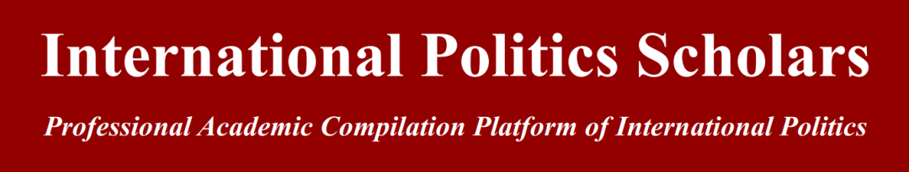
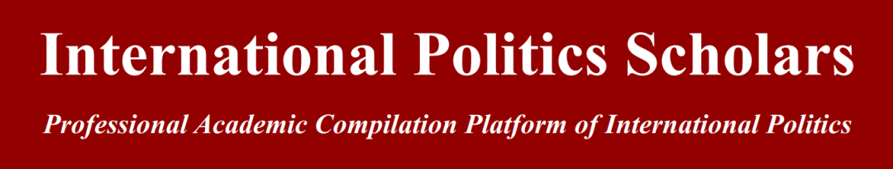

收录于合集

作品简介
【作者】 Kathrin Bachleitner，牛津大学玛格丽特夫人学堂宜家基金会研究员与国际发展学院（难民研究中心）成员，牛津大学政治与国际关系学院准成员。研究重点为国际关系中的集体身份、记忆与价值观。
【编译】 张曼娜（国政学人编译员，吉林大学公共外交学院）
【校对】 贺凡熙
【审核】 刘潇昱
【排版】 高佳美
【来源】 Kathrin Bachleitner, Diplomacy with Memory: How the Past Is Employed for Future Foreign Policy, Foreign Policy Analysis , Volume 15, Issue 4, October 2019, Pages 492–508
期刊简介
Foreign Policy Analysis ， 《外交政策分析》杂志是由牛津大学出版社代表国际研究协会出版的季刊。该期刊旨在以比较或具体案例研究的方式研究外交政策决策的过程、效果、原因或结果。反映了该领域的多样性、比较性和多学科性质，为研究出版物提供了一个开放的论坛，加强了跨越理论、方法、地理和学科边界的概念和思想交流。期刊影响因子为1.012。
记忆外交： 如何利用过去制定未来的外交决策
Diplomacy with Memory: How the Past Is Employed for Future Foreign Policy
Kathrin Bachleitner
内容提要
【文章概要】
本文认为，有着共同创伤过去的国家间存在着国际政治行为的另一种形式，即记忆外交。记忆外交是指 官方的外交团队为了在国际舞台上实现理性目标而传递某种历史形象的行为 。首先，文章搭建了一个理论与实证的框架，强调记忆外交作为一种战略外交行为，不符合有关国家行为的主流国际关系模型。第二部分，作者将该模型放在两个选定的冲突后场景中进行检验：西德和以色列、奥地利与以色列在20世纪50年代初关于向犹太国家支付最终赔款的双边谈判。从这些历史案例中提取记忆外交的核心要素后，本文认为应当利用记忆对传统外交战略工具进行修改，以便更好地解释其他冲突后情况下的国家行为。
【文章导读】本文将集体记忆这一跨学科的概念与国际关系联系起来，提出“记忆外交”（diplomacy of memory）这一模型，以解释各国如何利用构建的历史形象来实现外交政策目的。然后将所提出的理论假设应用于西德和奥地利两国与以色列的赔款谈判两个选定场景，通过对历史实例的检验，作者提出应当用记忆来对传统外交战略进行补充的观点。
文章导读
**
一、 集体记忆与国际关系
****
理解现在对于过去的政治争议是新兴的关于集体记忆的跨学科文献的核心。 ****集体记忆与历史本身无关，而只在于人们对历史的铭记与理解。相比于其他社会学科，政治学对于集体记忆的研究更加工具主义，关注集体如何利用记忆。 国内语境下，集体记忆的概念与认同以及政治合法性联系密切， 集体记忆通过在“历史（事实）与国家意识形态（神话）”之间提供必要联系，通过叙事、记忆和符号等媒介，将特定版本的过去传给后代，促进了国内的和平稳定，最终形成共同的国家认同。然而，当前国际政治对集体记忆的研究存在诸多不足。首先，“记忆政治”（politics of memory）的里程碑式研究都只阐明了国家如何利用记忆来进行国内政治活动，而各国利用记忆来制定外交政策，实现国际目标的实践始终没有被理论化。其次，集体记忆的概念在国际关系学科中始终没有得到统一。现有的对于集体记忆的少量研究展现了不同的研究重点、概念、实例和方法，虽并未提出全面的“记忆的国际政治”（international politics of memory）框架，但都强调了集体记忆对于国际关系的重要性，并且在这些作品中，集体记忆总是先在国内范围内形成，然后再影响国家的国际行为。作者认为，学者们忽视了一点： 集体记忆的影响路径可能是从国际到国内领域，而不是国内到国际领域 。综上所述，本文提出，各国应当更加积极地在国际舞台上运用集体记忆。为外交政策打造的集体记忆首先针对的是国际公众，其次才应与国内的记忆相协调。所以应当 根据记忆有意地制定外交政策，而不是使外交政策受特定过去的限制。 ****由于现有研究的不足，本文搭建了自己的理论框架，阐述各国如何在国际舞台上积极运用记忆外交。
二． “记忆外交”模型
本部分概述了“记忆外交”（diplomacy of memory）这一尚未理论化的外交行为模式。为了厘清集体记忆与国家外交行为之间的关系，作者针对集体记忆对外交政策的影响、其国内与国际结构的相互作用以及运用集体记忆的主观能动性提出了一系列关键问题。作者认为，要解决这些问题，第一步需要明确记忆外交的自变量： 什么样的集体记忆会被打造成外交工具？ ****第二步是阐明 国家如何利用记忆来追求对外政策目标 。（一） 将集体记忆概念化为外交工具 ****不同于记忆政治，记忆外交建议将集体记忆从国内环境中剥离出来，着眼于外交决策者为特定的外交政策目标所打造的记忆版本。最能实现国际战略目标的“官方记忆”（ official memory），大多面向国际公众，而一个社会的“公共记忆”（public memory）一般通过国内媒体渠道和公共话语所反映，二者可能并不一致。作者认为， 公共记忆能够影响官方外交在国际舞台上对于记忆的使用 。（二） 记忆外交政策行为 基于卡尔斯内斯（Carlsnaes）的外交政策分析（foreign policy analysis, FPA）框架所描述的外交政策特征，作者针对记忆外交提出了三个问题： 第一 ， 外交政策是什么样的政策承诺 ？ **** 第二 ，记忆外交 的目的是什么 ？ **** 第三 ， 这一概念是如何跨越国界的 ？ ****解决这些问题有助于定义 “记忆外交”。作者在这里借用托德·霍尔（Todd Hall）的“情感外交”（emotional diplomacy）概念。霍尔认为，各国可以将情感的投射作为实现其外交政策目标的战略工具。这种“情感表演”类似于记忆外交中的“记忆表演”。以杰维斯（Jervis）为代表的国际关系理性主义者将这种风险很高的外交努力称为“释放信号”（signaling）。而正是这一过程中的巨大代价将记忆外交与传统外交形式区分开来：记忆外交，重要的是记忆，而不是金钱。尽管如此，作者认为记忆外交仍旧具有外交政策的目的性，是一种首先面向特定国际目标的工具性策略。（三） 实证识别记忆外交： 负罪外交与无辜外交
****
基于上述理论假设，记忆外交模型提供了以下关于记忆与外交行为之间的有效因果推理的检验。 如果一个国家积极寻求用记忆进行外交，就必须证明外交政策制定者为了实现一个国际目标 ， 将特定的记忆版本打造成一种外交战略。 **** 广泛的集体记忆提供了因国际环境而异的作为政治权宜之计的形象。 ****19 世纪民族国家语境下的胜利者和失败者的形象在20世纪的战争语境下转变成犯罪者与受害者的概念。作者认为，国际舞台上负罪和无辜的历史形象，实际上为各国从可耻的过去中获取战略优势开辟了两条新的外交途径：要么承认负罪，对过去的错误行为承担道义责任，向外界把自己描绘成罪人，表现出内疚；要么将自己描绘成无辜的受害者，表现得被动和无助。相对应地，也有两种不同的国家外交行为方式：承担道德责任的犯罪者将寻求减轻伤害，并表现出口头和实质性的悔恨、羞愧和抱歉的姿态；而“无辜”的描述一旦被相信，就能完全避免这些，从而实现对自身痛苦的承认和补偿。 “负罪外交”（ diplomacy of guilt）与“无辜外交”（diplomacy of innocence）都是付出昂贵投资以将各自过去的形象投射到国际舞台上的的记忆外交。
三、记忆外交的应用： **** 1952 年对以色列赔款案
在这一部分，作者选取西德和奥地利两个国家，两个国家都是纳粹德国的中心，两个社会都存在大屠杀的犯罪者、受害者和旁观者，然而两者对其纳粹历史的讲述却截然不同。因此，对这两个案例的研究可以从两方面很好地检验国家如何开展记忆外交。
(一) ** 打造负罪外交：** 西德与以色列赔款问题
1949年德国总理阿登纳（Konrad Adenauer）上台以来，便认识到了与以色列和解的重要性。西德最初提出的1000万马克的赔款报价在以色列遭到了强烈反对。但新建立的以色列需要财政支持，占领国对西德提出赔偿要求在法律上又缺乏强制力，而西德本身就表示愿意承担纳粹罪行的道德责任，这便迫使以色列与西德直接谈判。第一次谈判于1951年在巴黎秘密举行，阿登纳接受了以色列财政部总干事戴维·霍洛维茨（David Horowitz）关于在西德正式公开宣布有罪的前提下开始财政谈判的立场，并于同年9月在德国联邦议院发表相关演说。然而，20世纪50年代的德国公众记忆是建立在士兵阵亡、盟军轰炸、被驱逐与苏联大规模镇压的受害者形象基础上的，与联邦德国政府的描绘的犯罪者形象截然不同。尽管如此，阿登纳政府仍旧继续将负罪外交打造成西德在国际舞台上的官方记忆外交战略。 对负罪的昂贵投资 ： 《卢森堡条约》（ ** the Luxembourg Agreement** ） ****阿登纳的公开承认使得西德实质性的外交政策行动取得了重大突破，西德与以色列在标准交易之外达成了谈判基础，此时是记忆，而不是金钱起到了重大作用。西德此时面临着财政负担和与阿拉伯国家的政治经济关系即将破裂的威胁，但在负罪外交的逻辑下，阿登纳将此视为西德加入西方联盟的必要代价。西德于 1952年9月10日与以色列签署《卢森堡条约》，承担了价值34.5亿马克的商品和服务的物质成本。尽管国内公众普遍反对，负罪外交还是在国际层面上取得了成功：在协议签署当天欧洲煤钢共同体各国就进行了首次会面。
(二) ** 打造无辜外交：** 奥地利与以色列赔款问题
根据同盟国在1943年发表的《莫斯科宣言》（ Moscow Declaration ），奥地利的反纳粹精英将奥地利描述成纳粹德国的首要受害者，也就意味着奥地利对七年“占领”发生的一切不负有任何责任，不应被同盟国占领，也不应承担任何赔偿，这一观点很快得到了奥地利社会各阶层的强烈支持。与德国不同，奥地利这一国家无辜的官方叙事在国内与国际层面都实现了国家利益，使得过去的创伤迅速转变为现在和未来所需。在国际社会中，最主要的批评声音来自以色列。与以色列对奥地利的在道德和实际利益之间徘徊的矛盾政策不同的是，奥地利从一开始就渴望与以色列建交。作者认为 奥地利对以色列的兴趣实际上出于两国关系对于形成其 “无辜受害者”形象的象征价值，19世纪50年代，奥地利已经认识到，其国际信誉很大程度上掌握在以色列手中。 对无辜的昂贵投资 ： **** 信贷协议而非赔款 ****在这种情况下，奥地利于1952年向以色列提供了 1亿奥地利先令的商业信贷。然而当时奥地利的经济完全依赖于马歇尔计划（Marshall Plan），以色列的偿债能力也令人担忧。奥地利的这一昂贵投资初看之下令人惊讶且迷惑，但仔细观察双方有关协议措辞的辩论，就会发现这一信贷业务对两国来说都非同寻常。1952年初，以色列外交部要求奥地利在提供贷款的同时，发表无条件谴责奥地利纳粹对该国犹太人犯下的暴行的友好宣言（friendship declaration），以便以色列在公众面前为其接受奥地利的资金辩护。然而，奥地利人遵循的是无辜外交的逻辑，将这一信贷协议说成是奥地利方面的一份慷慨礼物，拒绝了以色列的这一要求。尽管如此，奥地利坚持完成这一信贷协定，其更广泛的战略目标是在全世界提升其受害者的形象，这一协定在深化与以色列的双边关系的同时也使以色列放弃了索赔要求，这也就意味着以色列在世界面前证实了奥地利的受害者身份。至此，奥地利的无辜外交取得了第一次重大的国际成功，并为其最大的国际目标铺平了道路：1955年，占领国全部撤出奥地利，结束了四国分治。
(三) ** 对“记忆外交”模型的启示：** 奥地利与西德的案例对比
尽管西德和奥地利分别塑造了负罪者与受害者这两个截然不同的历史形象，但两国都利用记忆在国际舞台上追求自身的外交政策目标。西德的负罪外交旨在重新融入西方世界，奥地利与德国疏远，表明自身的无辜，则是为了无需支付纳粹德国（the Third Reich）受害者的巨额索赔，就能实现独立。对西德来说，承担责任是赢得西方盟友信任最可靠的方式。而只有一个“无辜的”奥地利才能避免苏联的索赔，并确保该国在东西方断层线之间的中立国地位。 采用负罪还是无辜的形象是由一个国家的特定政策目标所决定的 ，目标改变，记忆外交的实践也随之改变。 ****以 20世纪90年代的奥地利为例，1991年，奥地利总理弗朗茨·弗拉尼茨基（Franz Vranitzky）正式承认该国对纳粹罪行的共同责任，颠覆了其战后国家认同的基石。这一转变的原因在于， 冷战结束后，奥斯维辛（ Auschwitz）的记忆取代共产主义东方成为了西方的“邪恶他者”（evil other），铭记成为了新生代的道德责任。在这一背景下，对大屠杀（Holocaust）的积极承认成为了欧洲的入场券。奥地利的负罪外交也很快取得了成效：该国于1995年加入欧盟。（一） 其他案例的应用 作者认为，纵观世界各国，大多数有着二战可耻历史的国家都遵循了无辜外交，也有一部分采用了无辜外交与负罪外交的混合模式，西德所采用的负罪外交成为了“国际关系史上独一无二的一步”。接下来文章指出了关于战后的日本所奉行的是无辜外交还是负罪外交的争议，并提出相关工作的关键在于调查 该国是否愿意在这一外交战略上进行昂贵的投资 。随后，作者举出美国的例子，美国在对广岛（Hiroshima）和长崎（Nagasaki）进行原子弹轰炸后并未表示任何忏悔，美日关系却丝毫不受影响。一个可能的解释是 美国的超级大国地位使其缺乏推动其他国家基于记忆国际行为的战略目标，也就无需记忆外交，而对于中小国家来说，记忆外交则相较其他手段更加划算。 **** 在将记忆外交模式应用于其他案例时，国际体系的激励机制十分重要： 只有需要通过记忆外交实现的外交政策目标时，国家才会采用记忆外交的工具，而记忆外交发挥作用时，国家行为随外交政策目标而变化。 ****作者认为，要证明这一论断，未来的研究应当将眼光放在 1989年之后。随着冷战的结束，各国的国际激励机制发生了重大变化，根据上述论断，各国的外交行为也必定会发生变化。虽然作者在上文指出无辜外交或许成为了二战后各国的默认战略，但在后冷战时代，承担过去的责任似乎形成了一种新兴的道德观。因此，21世纪的负罪外交案例可能会有所增加，各国会根据其过去战争中的暴行、歧视性的国家行为以及殖民遗产所造成的损害对历史形象进行修正。
四、结论
本文对以往研究的超越性在于其提出了一个新的理论框架来解释一国如何利用其不光彩的过去记忆实施外交政策，而并非关注记忆如何为国内政治利益服务，或是将记忆以被动发挥作用的方式引入国际领域。20世纪50年代的西德与奥地利分别通过记忆外交的战略实现了融入西方和独立的政策目标，这种尚未理论化的外交实践可能会随着时间和地域的不同而变化。最后作者指出， 在任何情况下，记忆外交都依赖于具体的国际目标 ，如果未来的研究能够在其他情况下找到明确证据，那么集体记忆就应当成为国际关系的外交战略工具。
_ ** _ ** _ ** _
本文由国政学人独家编译推荐，文章观点不代表本平台观点，转载请联系授权。**__ 

国政学人
支持学术公益与知识传播
微信扫一扫赞赏作者 __赞赏
已喜欢，对作者说句悄悄话
取消 __
发送给作者
发送
最多40字，当前共字
上一页 1/3 下一页
长按二维码向我转账
支持学术公益与知识传播
受苹果公司新规定影响，微信 iOS 版的赞赏功能被关闭，可通过二维码转账支持公众号。